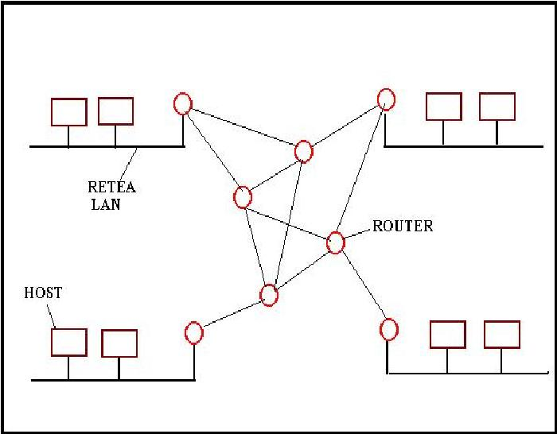
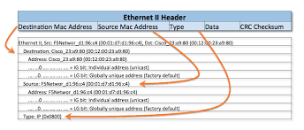
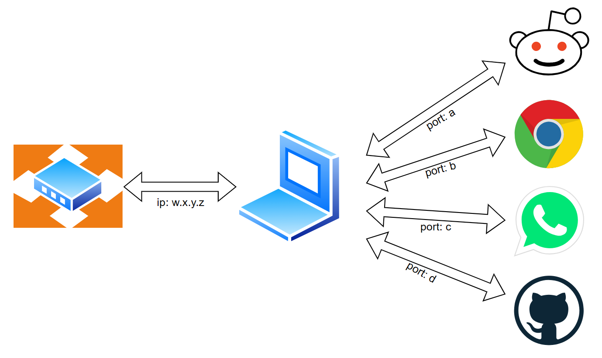

Despre Pachete de Date

Pachetele sunt unități mici de date care călătoresc prin rețea. Ele conțin informații despre destinație și datele propriu-zise.
În lumea digitală modernă, miliarde de pachete de date călătoresc în fiecare secundă prin rețelele globale. Acest sistem ingenios de împărțire a informației în unități mai mici face posibil transferul eficient al datelor, de la simple mesaje text până la streaming video în timp real. Fiecare pachet își găsește drumul spre destinație folosind adrese și protocoale specifice.
Părțile unui Pachet

- Header - adrese și control
- Date - informația transmisă
- Trailer - verificare erori
Transmisia Pachetelor

- Împărțirea datelor în pachete
- Trimiterea prin rețea
- Reasamblarea la destinație
Avantaje
- Transfer rapid
- Detectare erori
- Eficiență ridicată